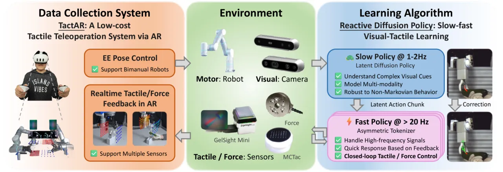
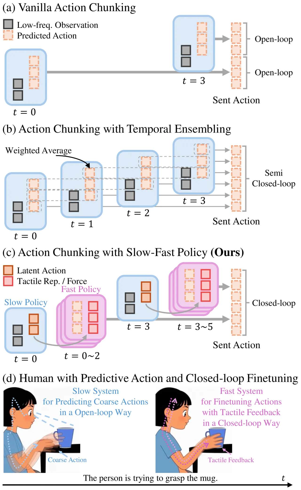
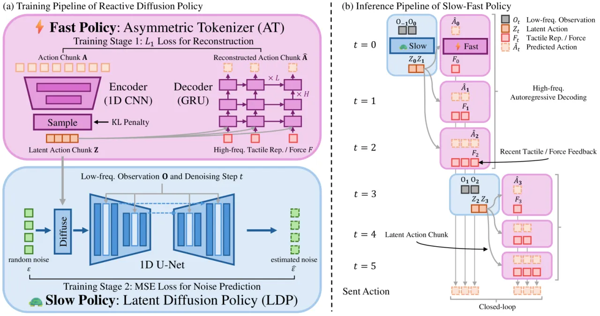
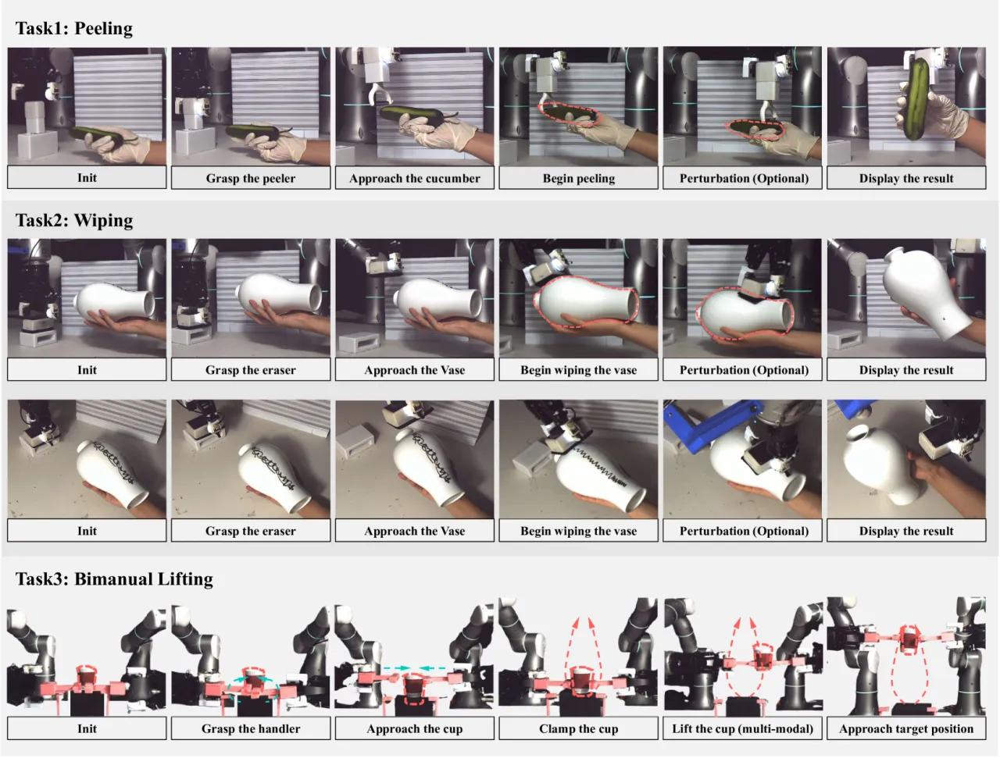
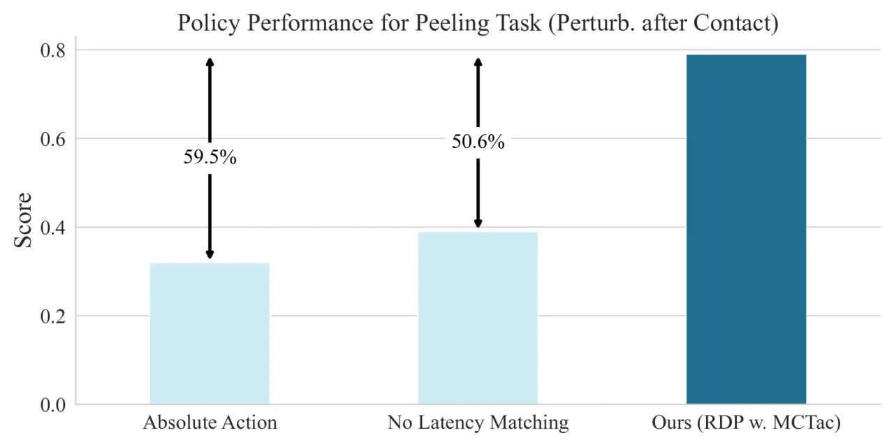

人靠视觉 + 触觉完成接触密集任务，能对外界变化即时反应并自适应控制接触力；而机器人做不到。RDP 用慢-快两级层次把 latent diffusion 的复杂轨迹建模与高频触觉闭环控制统一到一个框架中，并配套一套用 AR 提供实时力反馈的低成本遥操作系统 TactAR。在三项接触密集任务上，RDP 相比 SOTA 视觉模仿学习基线整体得分提升 >35%。

现有视觉模仿学习（visual IL）普遍依赖 action chunking 来建模复杂行为——一次预测一段动作块并开环执行。这带来两个瓶颈：一是在动作块执行期间无法即时响应实时的触觉反馈；二是大多数遥操作系统难以提供细粒度的触觉/力反馈，限制了能采集、能完成的任务范围。
“Existing visual imitation learning approaches rely on action chunking to model complex behaviors, which lacks the ability to respond instantly to real-time tactile feedback during the chunk execution.”
论文的设计灵感来自人类的慢-快双系统：慢系统开环预测粗略动作（伸手去够杯子），快系统再依据触觉反馈做闭环微调（接触后调整抓握力）。RDP 正是要在一个统一框架里同时具备“复杂轨迹建模”与“快速反应”。

RDP 采用两级层次：(1) 慢策略——low-frequency 的 Latent Diffusion Policy (LDP)，在 latent 空间里以低频（1–2 Hz）预测高层动作块；(2) 快策略——high-frequency 的 Asymmetric Tokenizer (AT)，以高频（>20 Hz）依据触觉/力反馈做闭环控制。数据侧则由 TactAR 遥操作系统采集：它把触觉信号表示为3D deformation field（一种可跨多种触觉/力传感器通用的表示），并通过 AR “贴附”到机器人末端，让操作者在 3D 空间中感知丰富的接触信息。

把动作块先压缩进 latent 空间，diffusion（1D U-Net）在 latent 空间对随机噪声去噪、条件于低频观测，充当“神经规划器（neural planner）”。在 latent 空间做 diffusion 让它能理解复杂视觉线索、建模多模态、并对非马尔可夫行为更鲁棒，同时把慢策略的推理频率压到 1–2 Hz。
“非对称”体现在编码器与解码器的输入不同：encoder 只看动作块，decoder 在重建时额外接入高频触觉/力反馈 F。推理时它以自回归方式，围绕慢策略预测的 latent action chunk 做亚毫米级（sub-millimeter）的反应式修正——修正量看似微小，却对接触密集任务的整体表现影响显著。单次推理 <1 ms，理论上可支持 >300 Hz。
为对齐真机的执行延迟，RDP “discard the first few action steps predicted by the model” —— 丢弃模型预测的前几步，只把与实际延迟精确匹配的动作发给机器人。
在三项接触密集任务（Peeling 削黄瓜、Wiping 擦花瓶、Bimanual Lifting 双臂夹起纸杯）上评测。基线为 Diffusion Policy (DP) 及其加触觉 embedding 的变体（DP w. tactile emb.）；RDP 分别配 GelSight Mini、MCTac、Force 等不同传感器验证通用性。评测含无扰动 / 接触前扰动 / 接触后扰动等条件（得分 0–1）。

| Method | No Perturb. | Perturb. Before | Perturb. After | All |
|---|---|---|---|---|
| DP | 0.56 | 0.58 | 0.19 | 0.44 |
| DP w. tactile emb. | 0.48 | 0.55 | 0.15 | 0.39 |
| RDP (GelSight) | 0.98 | 0.93 | 0.80 | 0.90 |
| RDP (MCTac) | 1.00 | 0.84 | 0.79 | 0.88 |
| RDP (Force) | 0.99 | 0.98 | 0.88 | 0.95 |
| Method | No Perturb. | Perturb. Before | Perturb. After | All |
|---|---|---|---|---|
| DP | 0.75 | 0.70 | 0.25 | 0.57 |
| DP w. tactile emb. | 0.60 | 0.75 | 0.15 | 0.50 |
| RDP (GelSight) | 0.85 | 0.95 | 0.50 | 0.77 |
| RDP (Force) | 0.95 | 0.85 | 0.80 | 0.87 |
| Method | Clamp | Lift | Score |
|---|---|---|---|
| DP | 0% | 0% | 0.00 |
| DP w. tactile emb. | 10% | 10% | 0.08 |
| RDP (GelSight + MCTac) | 100% | 100% | 0.55 |
| RDP (Force) | 100% | 90% | 0.80 |
“As shown in Tab. II, Tab. III and Tab. IV, RDP improves the overall score by a large margin (>35%) compared to various Diffusion Policy baselines.”
差距在接触后扰动（Perturb. After）一栏最为悬殊：基线 DP / DP w. tactile emb. 掉到 0.15–0.25，而 RDP 仍能维持 0.50–0.88——正对应其“动作块执行中仍可闭环反应”的设计目标。RDP 在不同触觉/力传感器（GelSight、MCTac、Force）下都成立，验证了通用性。

另一组消融（TABLE V，Wiping / 接触后扰动）说明：单纯给 DP 缩短 chunk 换取响应速度会崩坏——DP 8 帧块 grasp 成功率 100%、得分 0.15，缩到 2 帧块后 grasp 掉到 20%、得分仅 0.10；temporal ensemble（τ=0.2）grasp 30%、得分 0.05。RDP 则 grasp 100%、得分 0.50。论文指出 temporal ensemble 的表现对平滑系数“very sensitive”，难以实用。
“The fast policy in the RDP algorithm is currently limited to responding to high-frequency tactile / force input signals but cannot swiftly process high-frequency image inputs.” —— 高频视觉闭环仍是未解问题。
“TactAR system is designed for two-finger grippers.” 作者把扩展到灵巧手（dexterous hands）列为有前景的方向。
作者指出人通过该系统的遥操作 “not as intuitive or efficient as direct human-hand operations”。